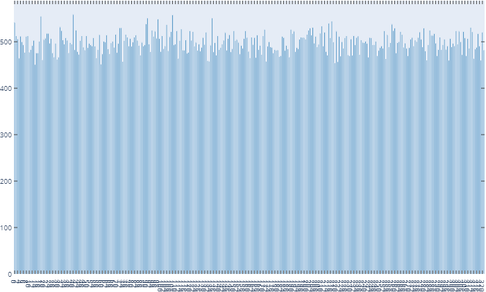

TorchQueueDataset¶
This Dataset holds a queue of items in memory. Being an iterable-style dataset set, it samples batches from the available queue upon demand.
How it works¶
The queue holds a fixed amount (queue.qsize <= queue.q_maxlen) of items in memory.
When sampling the queue, a batch of a given batch size (bs) is sampled randomly from all available items in the queue. Sampling the queue, advances the items by 1 (for mode='onsample'), which means that the first item in the queue is popped and a new one is added.
Note that sampling a certain item A from the queue does not necessarily result in A being popped next. Sampling always occurs uniformly from all items in memory and queue advancements only removes the oldest item, not the sampled one.
This behavior can arguably result in non-uniform sampling of items, as well as clustering samplings of items temporally, which could lead to forgetting long-unseen samples. Be aware of this trade-off.
To demonstrate at least the uniformity of our sampling, here is a sampling frequency histogram using mode='onsample' for 80k samplings of the CQ500 dataset (320 items) on a machine with slow network HDD storage. For this particular setup we increased our training speed from ~5s/it to 2it/s through the use of the queue (10x), while keeping the sampling mostly uniform.

Basic Example¶
Here we show how to use TorchQueueDataet based on an existing TorchDataset (Check out TorchDataset).
from torchvtk.datasets import TorchDataset, TorchQueueDataset
ds = TorchDataset.CQ500()
queue = TorchQueueDataset(ds, num_workers=4)
dl = queue.get_dataloader()
A TorchQueueDataset can be initialized from a TorchDataset. By default the queue size is determined by loading a sample and determine how large the queue can be to fill half of your available system memory. The queue is then filled by num_workers processes until full and refills whenever the queue was sampled.
Queue Memory Usage¶
You can override the length of the queue using the q_maxlen parameter (int) to set a size directly. Otherwise setting ram_use either sets a memory budget for your queue (for ram_use > 1.0) or a percentage of your available system memory (ram_use < 1.0). If you do special preprocessing upon loading that modifies your final item size, you can set avg_item_size to an average item size (in MB) or supply a torch.tensor which is used as a proxy for computing the memory budget.
Setting wait_fill to either True or an int blocks the __init__ until the queue has reached the given queue.qsize, while blocking for a maximum of wait_fill_timeout seconds.
Transforms¶
You can apply transforms at multiple stages of the Queue process:
Before adding the item to the queue: Use
TorchDataset.preprocess_fn. You can also give apreprocess_fnto theTorchQueueDataset.__init__, which will override the one set in the givenTorchDataset.At sampling from the queue, on a single item: Use
TorchQueueDataset.sample_tfmAt sampling from the queue, on the whole batch: Use
TorchQueueDataset.batch_tfm
You can use all torchvtk.transforms or any callable objects that operate on dicts, as defined by TorchDataset.
Queue Sampling¶
The queue is filled using background processes and has different filling modes.
Depending on how fast you can actually load your data compared to running your network, you might want to advance the queue by one item upon sampling (if your SSD/hard drives are fast enough). In this case use mode="onsample". If you find that data loading is your bottleneck, try to make the queue as big as possible and use mode="always". This will just keep pushing new items to your queue as fast as possible, removing old ones. If your network is generally faster, this is the desired way to get the most uniform sampling frequencies for all your items.
Advanced Example¶
This continues on the TorchDataset Example.
This example uses most of the arguments of the Queue and shows how to make the TorchQueueDataset a proper dataloader.
from functools import partial
from torchvtk.datasets import TorchDataset, TorchQueueDataset, dict_collate_fn
from torchvtk.transforms import Composite, GaussianNoise, RandFlip, RandPermute
tfms = Composite(
RandPermute(),
RandFlip(),
GaussianNoise(),
apply_on=['vol']
)
train_ds = TorchDataset('/mnt/hdd/torchvtk', # Path to torchvtk folder
preprocess_fn=None, # No transforms on load. Could be left out
filter_fn=lambda p: int(p.name[9:-3]) < 400) # Split
train_dl = TorchQueueDataset(train_ds,
mode = 'always',
ram_use = 0.7, # Use 70% of the available system RAM for the Queue
wait_fill = 4*args.batch_size, # Wait until at least 4x batch_size items are loaded
bs = args.batch_size, # Automatically batch items
num_workers = 4, # Use 4 processes to load new items
log_sampling = True, # This logs the frequency of the items
avg_item_size= 67.2, # The item size in MB for 1x256^3 float16 volumes
# avg_item_size = torch.ones(1,256,256,256, dtype=torch.float16), would be similar
sample_tfm=tfms, # Apply tfms on each sample individually when sampling from q
collate_fn=partial(dict_collate_fn,
key_filter=['vol', 'tf_tex']) # Use only those 2
).get_dataloader()
First we composite our desired augmentation. Here we apply some noise, randomly flip spatial dimensions and randomly permute spatial dimensions. The apply_on=['vol'] overrides the apply_on argument of the individual transforms, since we want to apply all of them only to the volume.
The training dataset is initialized as in the TorchDataset Example.
Sampling Mode¶
For the queue we use mode='always', because the data lies on a slow HDD and the loading is significantly slower than our network, so we load as fast as we can, while not slowing down the training. If the storage is not as bad, we could use onsample to stress the storage less.
We choose to use 70% of the available system memory for the queue and start training after the queue is filled with 4 times the batch size.
Queue size¶
The queue is filled with 4 worker processes and the final max queue size is determined using the given avg_item_size. As demonstrated in the example, this parameter could also take a torch.Tensor to estimate the approximate memory used per item. If this is left out, the average file size used on disk is used.
The queue automatically samples batches of args.batch_size, basically doing the job of a torch.utils.data.DataLoader. Since we only sample items from memory, using multiple processes will not be as beneficial and we need special dictionary collate functions.
Collate function¶
A collate function in PyTorch DataLoaders takes care of converting a list of items (samples from a Dataset) to an actual batch, thus torch.stacking the tensors.
The dict_collate_fn from torchvtk.datasets is the default collate function for TorchDataset items, which are dictionaries. By default it calls torch.stack on all dictionary elements that are torch.Tensors. As demonstrated in the example, we can set the key_filter argument to filter the final dictionary. This can be a list/tuple containing the desired keys or a function to get keys = filter(key_filter, key). You can also disable the stacking if you have unstackable tensors, by setting dict_collate_fn’s stack_tensors argument to False. You will get a list of tensors instead (for all tensors that is).
Getting a DataLoader¶
Lastly, note how TorchQueueDataset.get_dataloader() is called in the last line. This gives you an actual torch.utils.data.DataLoader if you need one for use with other frameworks. We disable the batching for this DataLoader, since our Queue already takes care of that. You can specify DataLoader arguments through the **kwargs, however the batch_size and collate_fn are fixed for this reason. Please make changes to those function in the Queue! Also note that, while you can set the DataLoader’s num_workers>0, we do not recommend this, since the use of multiple processes actually introduced more overhead than it would save on time through multiprocessing. Furthermore, settings pin_memory=True should not do anything, since all tensors in the Queue are already put in shared memory.
API¶
TorchQueueDataset¶
-
class
torchvtk.datasets.TorchQueueDataset(torch_ds, epoch_len=1000, mode='onsample', num_workers=1, q_maxlen=None, ram_use=0.5, wait_fill=True, wait_fill_timeout=60, sample_tfm=<function noop>, batch_tfm=<function noop>, bs=1, collate_fn=<function dict_collate_fn>, log_sampling=False, avg_item_size=None, preprocess_fn=None, filter_fn=None) Bases:
torch.utils.data.IterableDataset-
__init__(torch_ds, epoch_len=1000, mode='onsample', num_workers=1, q_maxlen=None, ram_use=0.5, wait_fill=True, wait_fill_timeout=60, sample_tfm=<function noop>, batch_tfm=<function noop>, bs=1, collate_fn=<function dict_collate_fn>, log_sampling=False, avg_item_size=None, preprocess_fn=None, filter_fn=None) An iterable-style dataset that caches items in a queue in memory.
- Parameters
torch_ds (TorchDataset, str,Path) – A TorchDataset to be used for queueing or path to the dataset on disk
mode (string) – Queue filling mode. - ‘onsample’ refills the queue after it got sampled - ‘always’ keeps refilling the queue as fast as possible
num_workers (int) – Number of threads loading in data
q_maxlen (int) – Set queue size. Overrides ram_use
ram_use (float) – Fraction of available system memory to use for queue or memory budget in MB (>1.0). Default is 75%
avg_item_size (float, torch.Tensor) – Example tensor or size in MB
wait_fill (int, bool) – Boolean whether queue should be filled on init or Int to fill the queue at least with a certain amount of items
wait_fill_timeout (int,float) – Time in seconds until wait_fill timeouts. Default is 60s
sample_tfm (Transform, function) – Applicable transform (receiving and producing a dict) that is applied upon sampling from the queue
batch_tfm (Transform, function) – Transforms to be applied on batches of items
preprocess_fn (function) – Override preprocess_fn from given torch_ds
filter_fn (function) – Filters filenames to load, like TorchDataset. Only used if torch_ds is a path to a dataset.
bs (int) – Batch Size
collate_fn (function) – Collate Function to merge items to batches. Default assumes dictionaries (like from TorchDataset) and stacks all tensors, while collecting non-tensors in a list
-
batch_generator() Generator for sampling the queue. This makes use of the object attributes bs (batch size) and the collate function
- Returns
Generator that samples randomly samples batches from the queue.
-
get_dataloader(**kwargs) - Returns
A dataloader that uses the batched sampling of the queue with appropriate collate_fn and batch_size.
- Return type
torch.utils.data.DataLoader
-
property
qsize Current Queue length
-
wait_fill_queue(fill_atleast=None, timeout=60, polling_interval=0.25) Waits untill the queue is filled (fill_atleast`=None) or until filled with at least `fill_atleast. Timeouts.
- Parameters
fill_atleast (int) – Waits until queue is at least filled with so many items.
timeout (Number) – Time in seconds before this method terminates regardless of the queue size
polling_interval (Number) – Time in seconds how fast the queue size is polled while waiting.
-
dict_collate_fn¶
-
torchvtk.datasets.dict_collate_fn(items, key_filter=None, stack_tensors=True) Collate function for dictionary data
- Parameters
items (list) – List of individual items for a Dataset
key_filter (list of str or callable, optional) – A list of keys to filter the dict data. Defaults to None.
stack_tensors (bool, optional) – Wether to stack dict entries of type torch.Tensors. Disable if you have unstackable tensors. They will be stacked as a list. Defaults to True.
- Returns
One Dictionary with tensors stacked
- Return type
dict